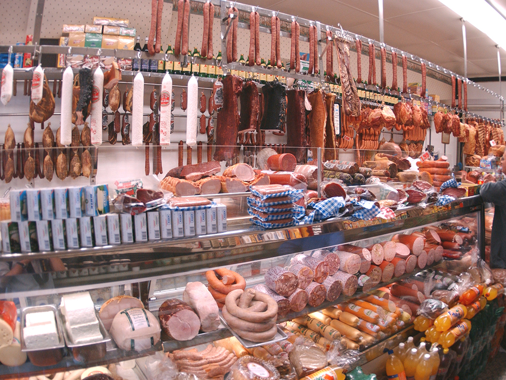
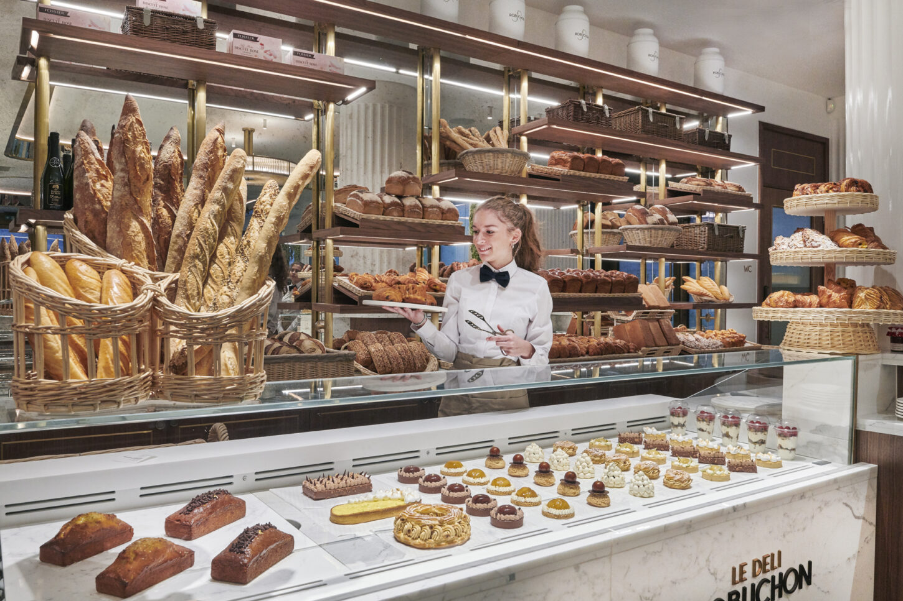

Speciality Shops
Butcher Shop
A retail establishment that sells meat, poultry, or seafood products to the general public, excluding butchers, restaurants, vendors, and retail stores, that specializes in the sale of raw or semi-cooked products. Excludes slaughterhouses and butchers.
It is not permissible to sell meat, poultry, or fish goods solely to restaurants, street sellers, or other common household businesses or institutions that are not expressly described herein. However, under the terms of an exception, a qualified slaughterhouse may sell meat, poultry, and fish goods for slaughter. The phrase "meat, poultry, and seafood products" refers to chicken, turkey, duck, goose, and goose products as well as bovine, sheep, and goat meat, pork, beef, mutton, and offal. It also includes sea urchin, herring, mackerel, shrimp, lobster, squid, oysters, clam, caviar, and clamshells, lump or lumpy, whether they are sold fresh, frozen, canned, smoked, or preserved. The word "meat, poultry, and seafood products" also refers to items offered after baking or on an order basis.
We provide services such as:
- Cutting, grinding and preparing meats for sale.
- Cleaning and maintaining tools and equipment and ensuring displays and signage are accurate and attractive.
- Weighing, packaging, pricing, and displaying products.
- Keeping records, budgets, and inventory.
Butcher Shop
A retail establishment that sells meat, poultry, or seafood products to the general public, excluding butchers, restaurants, vendors, and retail stores, that specializes in the sale of raw or semi-cooked products. Excludes slaughterhouses and butchers.
It is not permissible to sell meat, poultry, or fish goods solely to restaurants, street sellers, or other common household businesses or institutions that are not expressly described herein. However, under the terms of an exception, a qualified slaughterhouse may sell meat, poultry, and fish goods for slaughter. The phrase "meat, poultry, and seafood products" refers to chicken, turkey, duck, goose, and goose products as well as bovine, sheep, and goat meat, pork, beef, mutton, and offal. It also includes sea urchin, herring, mackerel, shrimp, lobster, squid, oysters, clam, caviar, and clamshells, lump or lumpy, whether they are sold fresh, frozen, canned, smoked, or preserved. The word "meat, poultry, and seafood products" also refers to items offered after baking or on an order basis.
We provide services such as:
- Cutting, grinding and preparing meats for sale.
- Cleaning and maintaining tools and equipment and ensuring displays and signage are accurate and attractive.
- Weighing, packaging, pricing, and displaying products.
- Keeping records, budgets, and inventory.
Delicatessen
A delicatessen or deli is often a retail location that offers a variety of premium, unusual, or foreign prepared meals.
In order to serve the growing population of German immigrants, the first delicatessens were opened in the United States in New York City in the early 1880s. The first kosher delicatessen was established in 1889, and as the German-Jewish community in New York City grew, so did the number of these establishments. By the late 20th to early 21st centuries, supermarkets, small-town shops, and fast-food restaurants started referring to certain areas of their establishments as "delis."
The plural of the term "delikatesse," "delicatessen" is a German loanword that first emerged in English in the late 19th century. The Italian term delicato, whose base word is the Latin adjective delicatus and which means "giving pleasure, delightful, pleasing," was borrowed by the French to create the German word délicatesse. The French in turn was borrowed from the Italian word delicatezza. After World War II, according to the earliest available evidence from 1948, the first abbreviated form of this term to appear in English was "deli."
We provide items such as:
- Cheese
- American, Parmesan, Mozzarella, etc.
- Meat
- Sliced Ham, Deli Meat, etc.
- Salads
- Egg salad, Macaronni Salad, etc.